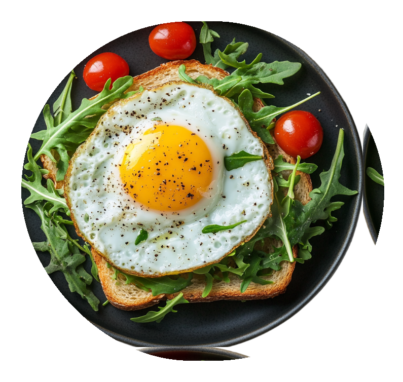

Збалансоване & здорове
Харчування вдома
Що таке здорове харчування?
- Різноманітність
- Помірність
- Регулярне
- Баланс
- Натуральне
- Смак
-
Білки
- Зростання та регенерація м'язів
- Синтез антитіл
- Є джерелом амінокислот
- Сприяють насиченню
-
Вуглеводи
- Тривала енергія
- Нормалізують перистальтику
- Допомагають регулювати вагу
- Сприяють насиченню
-
Вітаміни
- Зміцнюють імунітет
- Підтримують засвоєння кальцію
- Захищають клітини від вільних радикалів
-
Жири
- Зростання клітин та загоєння ран
- Покращують всмоктування вітамінів
- Є джерелом амінокислот
- Знижує запалення, підтримують здоров'я шкіри

-
Скоріше підпишись
Оформи передплату прямо зараз і відкрий доступ до більш ніж 100 ексклюзивних рецептів, які недоступні на безкоштовному тарифі!
Відкрий для себе нові уподобання, кулінарні техніки та натхнення для кожного дня.
-


-
-
Прості поради для старту
Почати шлях до здорового харчування можна з найпростіших кроків. Намагайтеся замінити солодкі напої чистою водою і додати в раціон більше овочів та фруктів. їжте повільніше і прислухайтеся до почуття насичення - це допомагає уникнути переїдання.
Плануйте прийоми їжі заздалегідь, щоб рідше вдаватися до фастфуду. Намагайтеся готувати вдома - так ви точно знатимете, що саме їсте. Головне — рухатися поступово і не прагнути ідеалу відразу.
- Плануйте прийоми їжі заздалегідь
- Пийте достатньо води
- Дотримуйтесь режиму харчування
- Обмежте доданий цукор
- Додайте овочі та фрукти в кожен прийом їжі


Починай прямо зараз
Смачні та корисні рецепти на коден день
-
Сніданки
-
Обіди
-
Вечері
-
Смузі
Індивідуальний підхід: Онлайн-підтримка тренера
-
Підтримка спільноти однодумців
Ви стаєте частиною закритого клубу, де кожен поділяє ваші цілі. Спілкуйтесь, діліться успіхами, отримуйте поради та знаходите мотивацію.

-
Економія часу
Програма та матеріали структуровані так, щоб ви отримували максимум користі за короткий час.

-
Формування стійких здорових звичок
Невеликі кроки ведуть до великих змін. Відкрийте для себе прості та ефективні методи.

-
Доступ до бази знань
Отримайте доступ до перевіреної інформації: статей, відеоуроків та тренувань від експертів.

-
Поліпшення загального самопочуття
Наша програма націлена як на зовнішні зміни, так і на повне оздоровлення організму.

-
Доступно з платною підпискою «Оптимальний» та вище